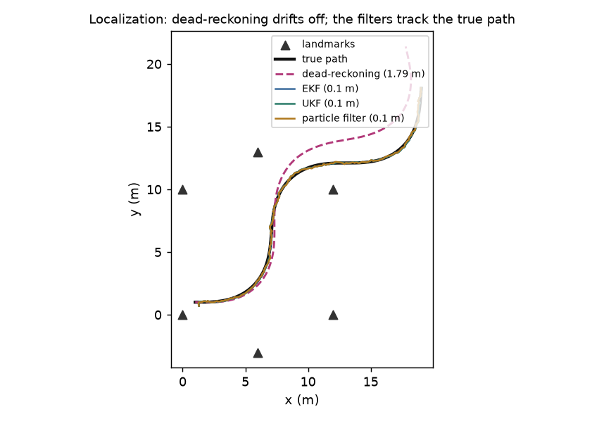

One robot driving among known landmarks, its pose estimated four ways — from raw dead-reckoning up to a particle filter — from the same noisy odometry and range/bearing measurements. Each is really run; each shows what it can and can't do.
The rule: measure something and fuse it — any filter kills dead-reckoning's drift. The filters then trade off. EKF is cheapest but linearizes; UKF's sigma points handle nonlinearity without derivatives; the particle filter is the only one that can hold a multimodal belief and localize from a completely unknown start.

| method | tracking error (RMSE) | from an unknown start |
|---|---|---|
| Dead-reckoning no measurements | ✗ 1.79 m (drifts) | — |
| EKF extended Kalman filter | ✓ 0.1 m | ✗ needs a mean |
| UKF unscented Kalman filter | ✓ 0.1 m | ✗ needs a mean |
| Particle filter Monte-Carlo localization | ✓ 0.1 m | ✓ 0.04 m |
Just integrate the odometry — add up each wheel-reported motion. No sensing of the world at all.
With biased, noisy odometry the error grows without bound: 1.79 m RMSE, and it only gets worse the longer it drives.
Keep a single Gaussian (mean + covariance). Predict with the motion model, then correct by LINEARIZING the nonlinear measurement about the current estimate and doing a Kalman update.
Fuses the range/bearing measurements and kills the drift: 0.1 m RMSE, a 18× improvement over dead-reckoning.
Also a single Gaussian, but instead of linearizing it pushes a set of deterministic sigma points through the exact nonlinear model and refits a Gaussian — no derivatives needed.
Matches the EKF here (0.1 m), and captures the nonlinearity more faithfully (no Jacobians, better consistency) when the motion or measurement bends harder.
Represent the belief as hundreds of weighted samples. Move each with the motion model, weight by how well it explains the measurement, and resample — no Gaussian assumption at all.
Tracks as well as the filters (0.1 m), and does the thing no Gaussian filter can: from particles spread over the WHOLE map (no idea where it is) it still converges to 0.04 m.
scripts/estimator_zoo_experiments.py, pure NumPy) — a robot, biased/noisy odometry, and range+bearing to six landmarks — run under all four estimators; the figure and numbers come straight from that run. In a well-observed problem the three filters tie on accuracy; their real differences are nonlinearity handling and the ability to start from nothing.